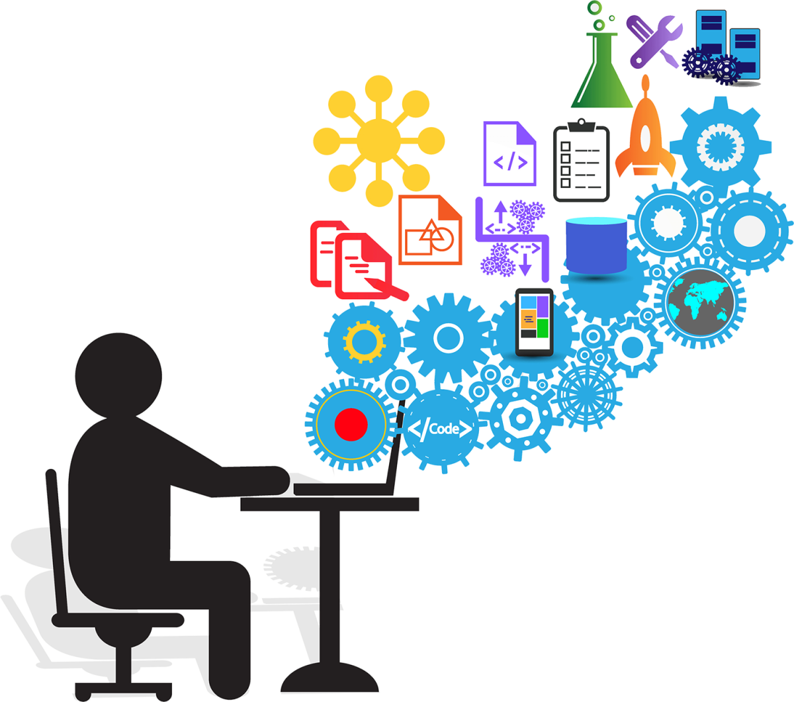

Программирование стало неотъемлемой частью современного мира, и знание языков программирования открывает множество карьерных возможностей. Разработка программного обеспечения используется во множестве областей, от веб-разработки и мобильных приложений до анализа данных и искусственного интеллекта. Одним из самых простых и популярных языков для начинающих является Python. Он отличается лаконичным синтаксисом и мощной поддержкой библиотек, что делает его идеальным для быстрого освоения и разработки различных проектов, включая науку о данных, веб-программирование и автоматизацию.
Python стал одним из самых востребованных языков программирования за последние годы. Он используется в различных областях: от создания сайтов и игр до разработки искусственного интеллекта и обработки больших данных. Благодаря простоте синтаксиса и огромному количеству библиотек, таких как Django для веб-разработки и Pandas для работы с данными, Python идеально подходит для начинающих. Он позволяет быстро приступить к решению задач без необходимости углубляться в сложные аспекты синтаксиса, что делает его первым языком, с которого начинают многие программисты.
JavaScript — это основной язык для разработки веб-приложений. В отличие от Python, который используется для широкого спектра задач, JavaScript работает напрямую в браузере, что делает его незаменимым для создания интерактивных элементов на веб-страницах. JavaScript широко применяется для фронтенд-разработки (работы с внешней частью веб-сайтов), а также для создания серверных приложений с использованием Node.js. Этот язык отличается гибкостью и простотой в использовании, что делает его важным инструментом для всех, кто хочет заняться разработкой сайтов и веб-приложений.
Помимо Python и JavaScript, существует множество других языков программирования, каждый из которых имеет свою специфику и применение. Java является одним из самых популярных языков для создания мобильных приложений на платформе Android. Он также используется для разработки крупных корпоративных систем. Язык программирования Java известен своей стабильностью и масштабируемостью, что делает его выбором для создания сложных, высоконагруженных приложений. Изучение Java открывает широкие возможности для карьерного роста в области мобильных и корпоративных технологий.
C++ и C — это языки, которые используются в системном программировании и разработке программного обеспечения с высокой производительностью. C++ применяется для разработки игр, операционных систем и приложений, требующих максимальной скорости обработки данных. Языки C и C++ требуют более глубоких знаний и опыта в программировании, так как они дают полный контроль над управлением памятью и оптимизацией кода. Тем не менее, их изучение может быть полезным для тех, кто стремится разрабатывать ресурсоемкие программы или работать в области встраиваемых систем.
Независимо от того, какой язык программирования вы выберете для изучения, важно помнить, что знание нескольких языков — это залог успеха в индустрии программирования. Каждый язык программирования имеет свои преимущества, и часто программисты используют несколько языков в зависимости от задач. Изучение различных языков помогает расширить кругозор и улучшить навыки решения проблем, а также адаптироваться к постоянно меняющимся требованиям рынка.
